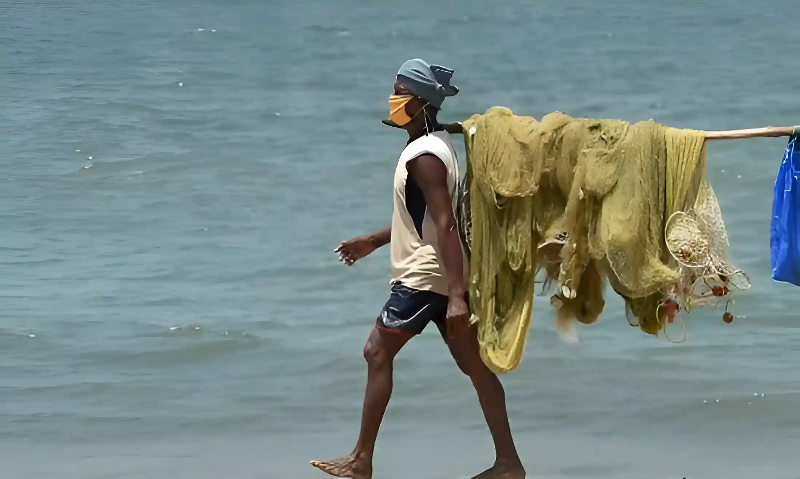
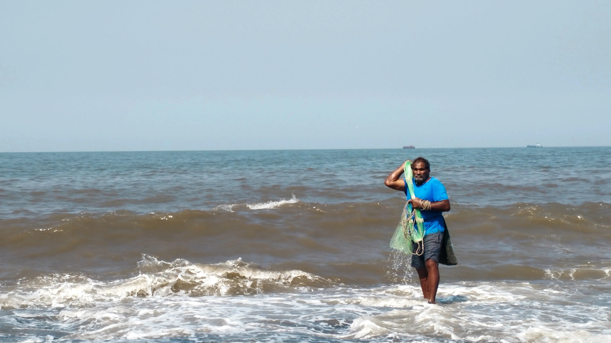
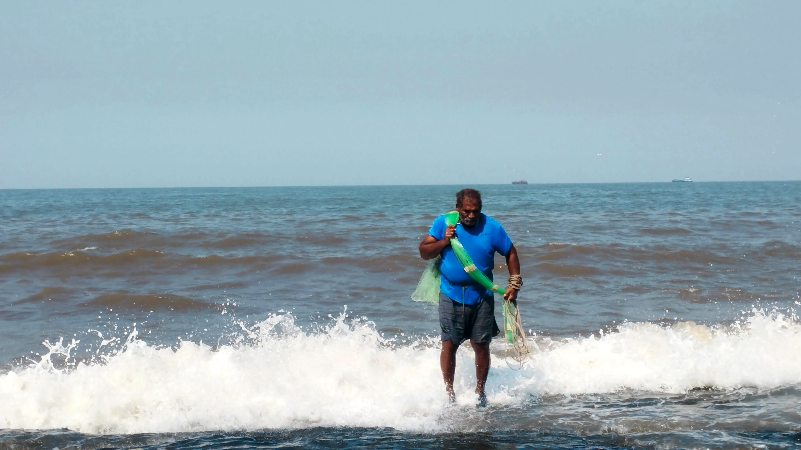
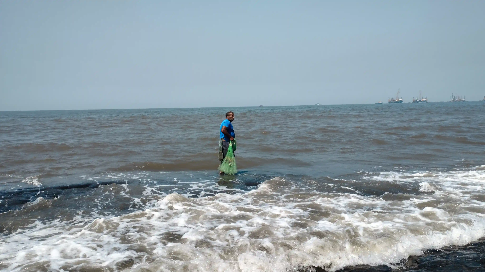
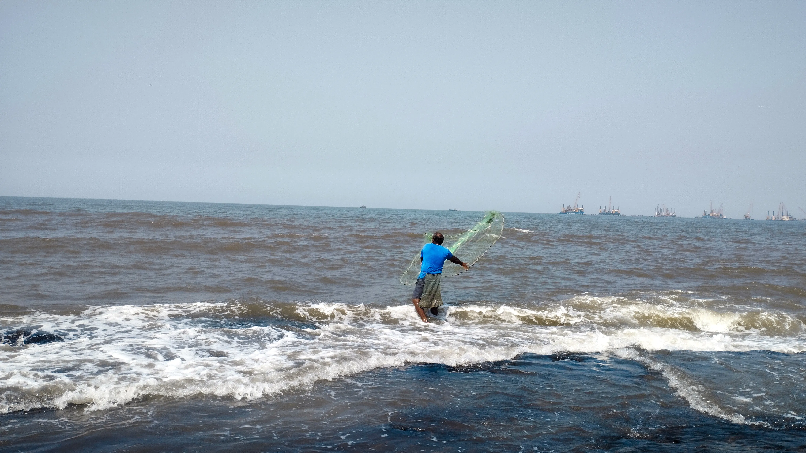
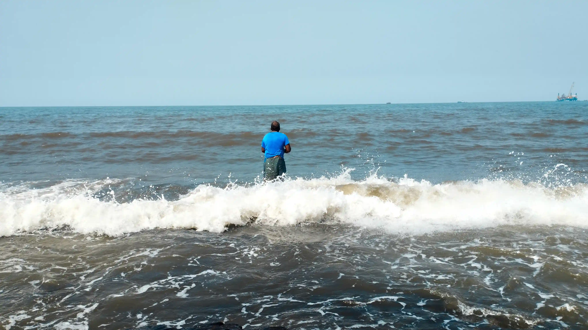
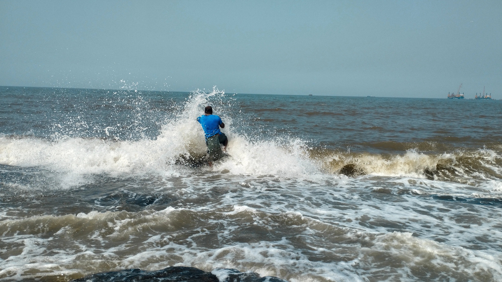

Life of Fishermen

Project Details
**Life of Fishermen** is a photographic journey into the resilient and soulful world of fishermen, who brave the uncertainties of the sea every day. This project celebrates their unwavering spirit, traditional practices, and the symbiotic relationship they share with nature.
Through the lens, I’ve captured the rough hands that pull in the nets, the serene sunrise on the horizon, and the quiet moments of camaraderie among the fishermen. Every image reflects the essence of their lives, intertwined with the rhythm of the waves and the call of the ocean.
Client:
Oceanic Tales Project
Date:
20 Nov 2024
Location:
Kerala, India
Project Type:
Documentary Photography
Equipment Used:
Sony A7R IV, 24-70mm f/2.8 Lens, Drone for aerial shots
Special Techniques:
Use of natural light, wide-angle shots for dramatic skies, and aerial views to capture the fishermen at work





